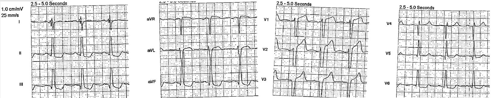
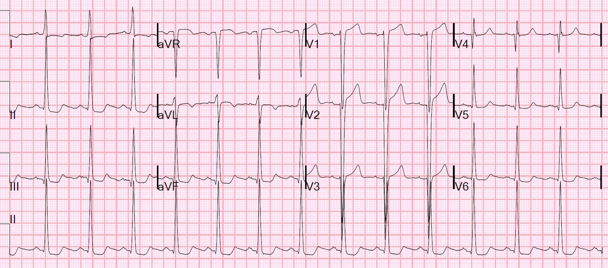
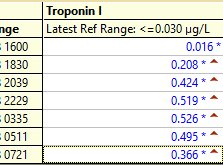
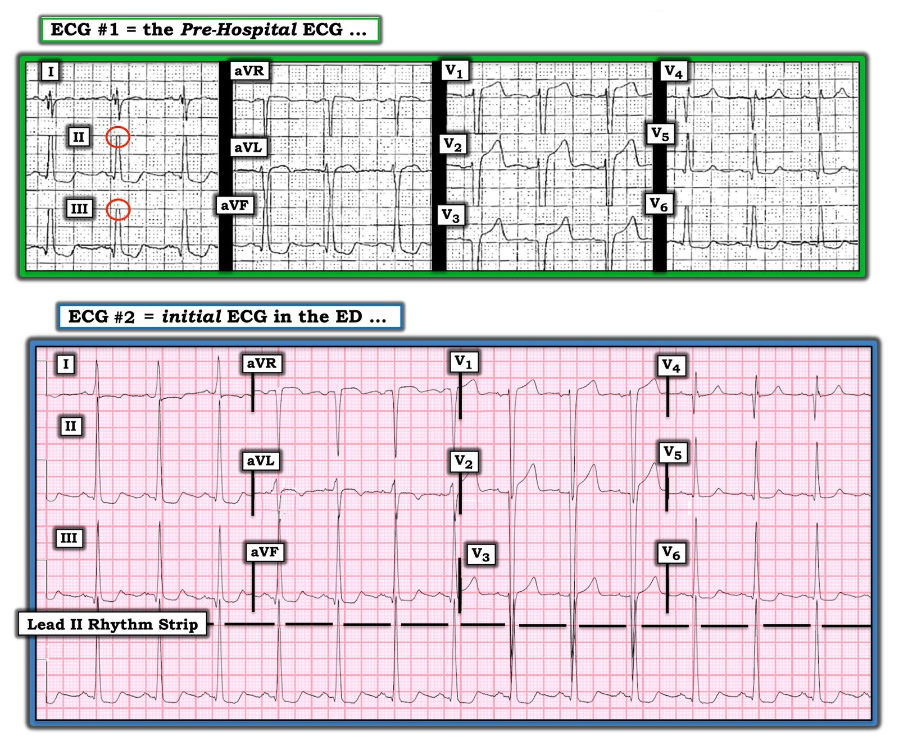
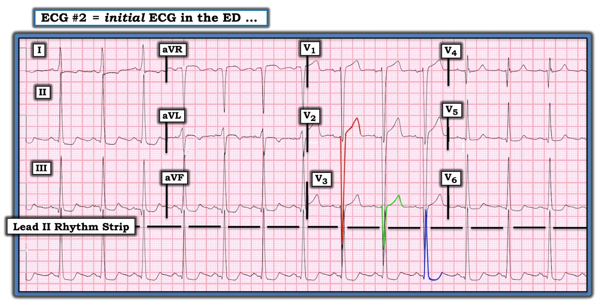
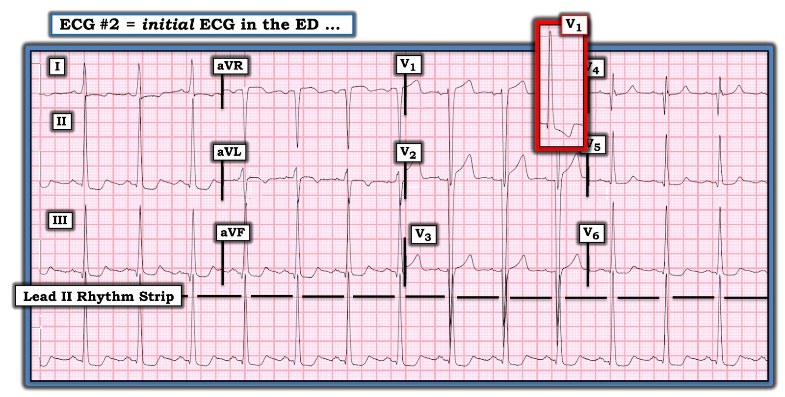
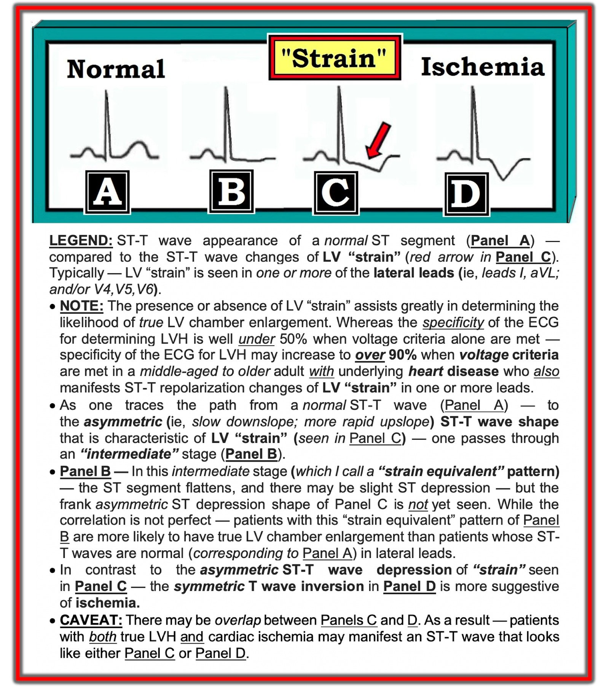
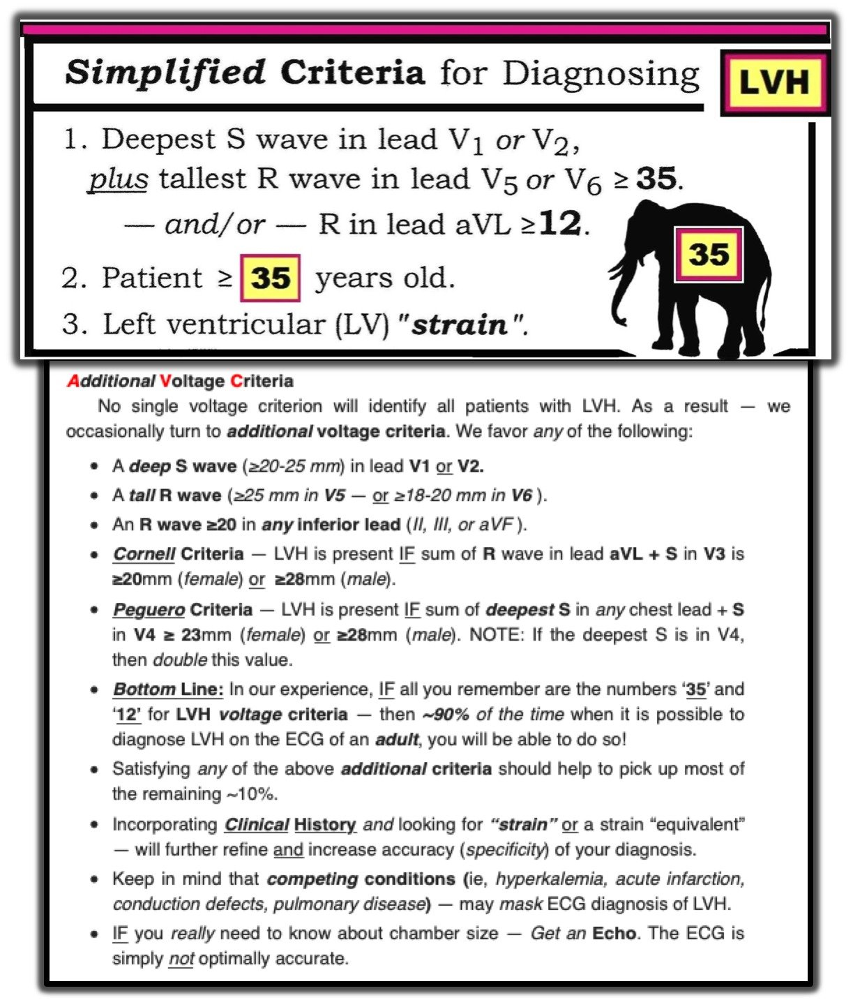

20/06/2020 — Ngất và ST chênh lên trên điện tâm đồ trước viện
Bản dịch tiếng Việt của bài "Syncope and ST Elevation on the Prehospital ECG" – Dr. Smith’s ECG Blog. Giữ nguyên toàn bộ 8 hình ảnh của bản gốc.
Một bệnh nhân 75 tuổi có tiền sử bệnh động mạch vành (CAD), phẫu thuật bắc cầu chủ vành (CABG) và suy tim phân suất tống máu giảm (HFrEF) đến khám sau một cơn ngất. Không có tiền triệu và không có triệu chứng kèm theo như khó thở (SOB) hay đau ngực.
= = =
Nhân viên cấp cứu ngoài viện đã ghi một điện tâm đồ:


= = =
Khi đến viện, huyết áp 150/80, mạch 80. Một điện tâm đồ được ghi:


— Như vậy, LVH trên điện tâm đồ không phải lúc nào cũng tương ứng với LVH về giải phẫu.
— Tuy nhiên, điện thế cao thì có tương ứng với đoạn ST bất thường. Sóng S ở V2 là 50 mm; STE là 2,5. Tỷ số = 0,05, là bình thường ==> giả STEMI do LVH (LVH PseudoSTEMI).
= = =
Khai thác thêm bệnh sử, bệnh nhân đã đi bộ suốt cả ngày dưới trời nóng mà không uống nước. Cơn ngất xảy ra khi đang đi tiểu.
- Đã chụp CT sọ não và chụp CT mạch phổi, cả hai đều âm tính.
= = =
Vậy là đơn giản, đúng không?
— Đừng vội . . .
= = =
Troponin I lần đầu trả về 0,016 ng/mL, nhưng lần thứ hai là 0,208 ng/mL.
- Điện tâm đồ 3 giờ sau không thay đổi
- Bệnh nhân không được bắt đầu heparin, vì nhồi máu cơ tim típ II được nghiêng về hơn NSTEMI như là nguyên nhân gây tăng troponin.
- Bệnh nhân được nhập viện để theo dõi, vì nguy cơ rối loạn nhịp thất là nguyên nhân gây ngất ở bệnh nhân này cao (rất cao do HFrEF và bệnh cơ tim thiếu máu cục bộ).
= = =
Diễn biến troponin:


Do các giá trị troponin này điển hình cho NSTEMI, một siêu âm tim chính thức đã được thực hiện:
- Giảm chức năng tâm thu thất trái, mức độ trung bình-nặng.
- Phân suất tống máu thất trái ước tính là 35%.
- Rối loạn vận động thành khu trú — vách liên thất đoạn xa và mỏm.
- Giãn thất trái, mức độ nặng.
Không đề cập đến phì đại đồng tâm, mà chỉ có giãn nặng (rất khác nhau!).
- Như vậy, LVH trên điện tâm đồ không tương ứng với LVH về giải phẫu.
- Nhận xét bổ sung: Có bằng chứng thất trái giãn kèm rối loạn chức năng khu trú ở vùng chi phối của LAD. Vận động vách liên thất mất đồng bộ rõ rệt, phù hợp với kiểu hoạt hóa LBBB. Không có kết quả cũ để so sánh.
= = =
Diễn biến lâm sàng:
- Bệnh nhân không có biến cố nào khi theo dõi điện tim qua đêm.
- Bệnh nhân được bù nước và không còn triệu chứng tư thế đứng trước khi ra viện; đi lại tốt.
- Bệnh nhân luôn phủ nhận đau ngực hay khó thở.
- Bệnh nhân không muốn nằm viện thêm để theo dõi điện tim hoặc hội chẩn điện sinh lý (EP) nội trú vì cảm thấy khỏe, tin chắc rằng mất nước là nguyên nhân gây ngất, và kiên quyết đòi về nhà.
= = =
Bàn luận:
Do đó, không ghi thêm điện tâm đồ nào và không chụp mạch vành, không làm nghiệm pháp gắng sức hay chụp CT mạch vành. Nhồi máu cơ tim cấp ít khi biểu hiện chỉ bằng ngất đơn thuần, không kèm triệu chứng nào khác, nên xác suất tiền nghiệm của nhồi máu cơ tim cấp là thấp.
Tuy nhiên, troponin cao và theo ý kiến của tôi, các dữ liệu trên không loại trừ khả năng nhồi máu cơ tim típ 1. Troponin tăng rất cao mà không có yếu tố stress đáng kể nào được biết (vốn có thể gây nhồi máu cơ tim típ 2). Các giá trị troponin KHÔNG phù hợp với STEMI (OMI), vốn thường có troponin I ít nhất 5 ng/mL. Dù vậy, tôi không cho rằng nhồi máu cơ tim típ I liên quan đến huyết khối đã được loại trừ ở đây, đơn giản vì bệnh nhân từ chối đánh giá thêm.
- Đánh giá: Ngất do phối hợp giữa đi tiểu, mất nước và chức năng thất trái kém
- May mắn là theo dõi về sau xác nhận bệnh nhân ổn định lâu dài.
= = =
======================================
BÌNH LUẬN CỦA TÔI, bởi KEN GRAUER, MD (20/6/2020 — cập nhật ngày 26/10/2025):
Ca này có một số điểm tương đồng với bài ngày 6 tháng Hai năm 2020 trên Dr. Smith’s ECG Blog. NẾU bạn đã bỏ sót các dấu hiệu MẤU CHỐT trên điện tâm đồ trước viện của ca hôm nay — Hãy xem lại Bình luận của tôi ở cuối trang của bài ngày 6 tháng Hai năm 2020.
- Để không lặp lại phần bàn luận chi tiết của tôi từ bài ngày 6 tháng Hai — ở đây tôi tập trung bình luận vào những chi tiết cụ thể của 2 điện tâm đồ trong ca hôm nay. Cho rõ ràng — tôi đã đặt chúng cạnh nhau trong Hình 1.
= = =
Hình 1: 2 điện tâm đồ trong ca hôm nay.


= = =
Suy nghĩ của tôi về điện tâm đồ #1:
Điều quan trọng là phải nhận ra ngay TẠI SAO tôi đã thêm 2 vòng tròn nhỏ MÀU ĐỎ vào điện tâm đồ #1 ( = điện tâm đồ trước viện).
- Có một giới hạn về mức điện thế mà điện tâm đồ trước viện ở phần lớn các hệ thống cấp cứu ngoài viện (EMS) có thể hiển thị. Kết quả là — biên độ QRS bị cắt cụt tự động khi vượt quá giới hạn đó. Điều này giải thích khoảng trống giữa nhánh lên và nhánh xuống của phức bộ QRS ở chuyển đạo II và III của điện tâm đồ #1 (bên trong các vòng tròn nhỏ MÀU ĐỎ ở các chuyển đạo này).
- BẠN CÓ THẤY chỗ biên độ QRS cũng đã bị cắt cụt tự động ở từng chuyển đạo phía trước của điện tâm đồ #1 không?
= = =
Như Dr. Smith đã nêu — hậu quả của việc “cắt cụt tự động” biên độ sóng S ở chuyển đạo V1, V2 và V3 của điện tâm đồ #1 trở nên rõ ràng ngay khi chúng ta so sánh điện tâm đồ trước viện — với điện tâm đồ #2 (là điện tâm đồ đầu tiên được ghi tại khoa cấp cứu (ED)):
- Hãy chú ý trong Hình 1 sự gia tăng khổng lồ biên độ QRS ở hầu như mọi chuyển đạo của điện tâm đồ #2 so với điện tâm đồ #1!
= = =
= = =
CÂU HỎI:
- Biên độ QRS ở điện tâm đồ #2 LỚN ĐẾN MỨC NÀO?
= = =
= = =
= = =
TRẢ LỜI:
Đôi khi rất khó xác định biên độ QRS khi có chồng lấn sóng R hoặc sóng S từ chuyển đạo này sang chuyển đạo kế tiếp. Ở điện tâm đồ #2 — thực sự có một chỗ trên bản ghi mà phức bộ QRS chồng lấn ở 3 chuyển đạo! (các đường MÀU ĐỎ, XANH LÁ và XANH DƯƠNG trong Hình 2, cho thấy sự chồng lấn của sóng R và sóng S từ chuyển đạo V2, V3 và từ dải nhịp chuyển đạo II dài bên dưới).
- Sóng S ở chuyển đạo V2 có vẻ là 48 mm (các đường MÀU ĐỎ ở chuyển đạo V2).
- Sóng S ở chuyển đạo V3 có vẻ là 20 mm (các đường MÀU XANH LÁ ở chuyển đạo V3).
- Sóng R ở chuyển đạo II dài có vẻ là 31 mm (các đường MÀU XANH DƯƠNG ở dải nhịp chuyển đạo II dài).
- “Giải pháp dễ dàng” để xử lý vấn đề biên độ QRS quá lớn gây chồng lấn các phức bộ — là ghi điện tâm đồ ở NỬA chuẩn (half-standardization). Đáng tiếc là lựa chọn này có thể không có sẵn với các bản ghi trước viện.
= = =
Hình 2: Tôi đã tô màu phức bộ QRS ở chuyển đạo V2, V3 và ở chuyển đạo II dài lần lượt bằng MÀU ĐỎ, XANH LÁ và XANH DƯƠNG — để minh họa kích thước thực sự của phức bộ QRS ở từng chuyển đạo này.


= = =
Chúng ta còn lại thử thách đánh giá các thay đổi ST-T ở điện tâm đồ #2. Ngoài biên độ QRS tăng rõ rệt mà chúng ta thấy ở hầu như mọi chuyển đạo — còn có đoạn ST chênh lên ở chuyển đạo V1 và V2 (cũng như đoạn ST dạng vòm (coving) kèm sóng T đảo ngược nhẹ ở chuyển đạo aVL) — và, đoạn ST dẹt kèm ST chênh xuống nhẹ ở hầu hết các chuyển đạo còn lại (Hình 3).
- Như Dr. Smith đã nêu — giờ khi đã thấy sóng S ở từng chuyển đạo phía trước của điện tâm đồ #2 thực sự lớn đến mức nào — vài mm ST chênh lên mà ta thấy ở chuyển đạo V1 và V2 trông không cao bất tương xứng.
- Thay đổi ST-T của “tăng gánh” thất trái (LV strain) đáp ứng với LVH rõ rệt thường gặp nhất ở một hoặc nhiều chuyển đạo bên (tức là chuyển đạo I, aVL; V4,V5,V6). Ở dạng cực độ nhất — các thay đổi này biểu hiện bằng ST chênh xuống không đối xứng (tức là đoạn ST đi xuống chậm hơn so với lúc đi lên) — nhưng các dạng kém rõ rệt hơn của hiện tượng này, mà tôi gọi là “tương đương tăng gánh” thất trái (LV strain equivalent) — thường gặp.
- Ở một bệnh nhân có bệnh tim nền đạt tiêu chuẩn điện thế của LVH — việc phát hiện hoặc “tăng gánh” thất trái hoặc “tương đương tăng gánh” làm tăng đáng kể độ đặc hiệu của điện tâm đồ trong chẩn đoán LVH thực sự (Hình 4).
- Như tôi đã giải thích và minh họa chi tiết trong bài ngày 6 tháng Hai năm 2020 — Việc dùng nghiệm pháp soi gương (Mirror Test) (tức là đảo ngược phức bộ QRST ở chuyển đạo V1) có thể giúp nhận ra hình dạng của “tăng gánh” thất trái trông như thế nào ở một chuyển đạo bên phải (như chuyển đạo V1 hoặc V2). Như thể hiện trong ô chèn của chuyển đạo V1 ở Hình 3 của ca hôm nay — hình ảnh đảo ngược theo nghiệm pháp soi gương của phức bộ QRST ở chuyển đạo V1 trông đúng như bạn mong đợi ở một bệnh nhân LVH + “tăng gánh” (tức là biên độ sóng R tăng kèm ST chênh xuống không đối xứng với nhánh xuống chậm và phần cuối đi lên nhanh hơn). Chuyển đạo V2 ở Hình 3 cho thấy hình ảnh tương tự, phù hợp với LVH + “tăng gánh” ở chuyển đạo bên phải này.
- Nhiều chuyển đạo khác ở Hình 3 biểu hiện đoạn ST dẹt kèm chênh xuống nhẹ, phù hợp với hình ảnh “tương đương tăng gánh”.
- Siêu âm tim đã xác nhận các dấu hiệu điện tâm đồ nêu trên trong ca hôm nay là hậu quả của LVH nặng.
= = =
Hình 3: Một lần nữa xem lại điện tâm đồ #2 — với ô chèn cho thấy hình–soi gương của phức bộ QRST ở chuyển đạo V1.


= = =
T.B. (P.S.): Hãy nhớ rằng các tình trạng cạnh tranh (tức là tăng kali máu, nhồi máu cấp, rối loạn dẫn truyền, bệnh phổi) có thể che lấp chẩn đoán LVH trên điện tâm đồ.
- NẾU bạn thực sự cần biết kích thước buồng tim — Hãy làm siêu âm tim. Điện tâm đồ đơn giản là không đủ chính xác một cách tối ưu.
= = =
Về “tăng gánh” thất trái (so với “tương đương tăng gánh” ):
- Hình 4: Minh họa và mô tả hình ảnh “tăng gánh” thất trái và “tương đương tăng gánh”.


= = =
Về tiêu chuẩn điện tâm đồ của LVH:
Có rất nhiều tiêu chuẩn điện tâm đồ để chẩn đoán LVH. Tôi liệt kê những tiêu chuẩn tôi ưa dùng trong Hình 5 — và bàn luận chi tiết lý do cho cách tiếp cận của tôi trong chẩn đoán LVH trên điện tâm đồ tại ĐƯỜNG LINK NÀY.
- Có một mối tương quan thô (nhưng còn xa mới hoàn hảo) giữa kích thước tương đối của phức bộ QRS trên điện tâm đồ — và mức độ giãn buồng thất trái. Về lâm sàng — Có thể rút ra nhận định từ điện tâm đồ về mức độ tương đối có khả năng của giãn buồng thất trái dựa trên: i) điện thế tăng BAO NHIÊU, theo các tiêu chuẩn ở Hình 5; — và, ii) sự hiện diện và mức độ của các thay đổi ST-T phù hợp với “tăng gánh” hoặc “tương đương tăng gánh” (như mô tả ở Hình 4).
= = =
Hình 5: Các tiêu chuẩn tôi ưa dùng để chẩn đoán LVH trên điện tâm đồ.


= = =
Một Điểm Cuối cùng (thuộc phần Vượt ra ngoài phần cốt lõi):
- Hãy nhìn lại Hình 1 lần cuối. Bạn có thể giải thích hình dạng rsR’S’ kỳ dị của phức bộ QRS ở chuyển đạo I của điện tâm đồ #1 trong Hình 1 không?
= = =
= = =
SUY NGHĨ CỦA TÔI:
Điện thế ở điện tâm đồ #1 rất lớn! Biên độ QRS tăng đến mức lớn nhất mà bạn có thể gặp. Ngoài ra — phức bộ QRS trông rộng ở điện tâm đồ #1 (tôi đo được 0,12 giây). Một phần của sự tăng độ rộng QRS này có thể là do LVH khổng lồ (tức là xung điện sẽ mất nhiều thời gian hơn để đi qua một thất trái lớn hơn và dày hơn). Nhưng cũng có thể chúng ta đang thấy một dạng LBBB không hoàn toàn. Đôi khi với LBBB hoàn toàn — mức độ blốc dẫn truyền ở phân nhánh sau có thể tương đối nhiều hơn so với phân nhánh trước — và khi có LVH rõ rệt, điều này có thể tạo ra sóng lệch đổi hướng vectơ bất thường mà ta thấy ở chuyển đạo I của điện tâm đồ #1.
- Tôi tin rằng dấu hiệu trên siêu âm tim “vận động vách liên thất mất đồng bộ rõ rệt, phù hợp với kiểu hoạt hóa LBBB” ủng hộ giả thuyết của tôi.
- Điều đáng chú ý — Chuyển đạo I trên điện tâm đồ đầu tiên tại ED = điện tâm đồ #2 (được ghi một lúc sau khi ghi điện tâm đồ #1 trước viện) — không còn cho thấy sóng lệch QRS 4 pha bất thường này ở chuyển đạo I. Tôi đã gặp hiện tượng tương tự ở các bệnh nhân LBBB — trong đó đôi khi trục lệch phải có thể nhiều hơn hoặc ít hơn đi kèm với LBBB từ ngày này sang ngày khác (có lẽ do sự khác biệt tương đối thay đổi về mức độ blốc ở một trong các phân nhánh).
= = =
ĐIỀU CỐT LÕI:
Hãy ghi nhớ hình ảnh điện tâm đồ bạn thấy ở điện tâm đồ #1 của Hình 1. Bạn SẼ gặp lại hình ảnh này (có lẽ nhiều lần!) — và điều quan trọng là: i) Nhận ra rằng biên độ QRS bị cắt cụt tự động bởi nhiều máy điện tâm đồ trước viện; — và, ii) Xét đến việc cắt cụt tự động biên độ QRS này — hình dạng của ST chênh lên thấy ở chuyển đạo V1, V2 và V3 của điện tâm đồ #1 thường không phải là hậu quả của STEMI thành trước cấp, mà phản ánh “tăng gánh” thất trái do LVH rõ rệt ở các chuyển đạo bên phải này.
= = =
= = =